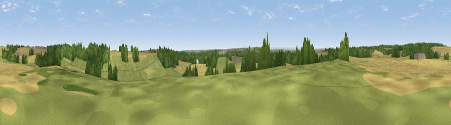

Viewpoint near Ledsham
#41060 in England · top 84% of its area beats it · near LedshamThe view, rendered

A 360° render of this exact spot computed from the terrain model, tree cover and land cover — summer colours, afternoon light, calibrated against photographs of famous viewpoints. Real trees, hedges and buildings will differ in detail.
The panorama
Grey silhouette: terrain skyline in each direction (720 bearings, Earth curvature and refraction included). Dashed green: skyline with trees (+15 m) and buildings (+8 m) as obstacles. Blue strip: how far the ground is visible on each bearing.
Where the view opens
Wedge length = distance to the farthest visible ground on that bearing (vegetation-aware). Rings at 10, 25 and 50 km.
What fills the view
48% cropland · 28% grassland · 20% woodland · 3% built-up ·
Angular shares of the visible panorama (visual magnitude), not map area. Landscape diversity 0.51 (0–1 Shannon).
Key numbers
More beautiful places nearby
The staircase of upgrades: each row has a higher view potential than everything closer. Driving times are estimates from straight-line distance, calibrated against real road routing — check an actual route before setting out.
| Place | Direction | Drive | Score |
|---|---|---|---|
| Viewpoint near New Fryston | S · 1 km | ~2 min | 45.6 |
| Viewpoint near Micklefield | NNW · 4 km | ~9 min | 65.7 |
| Viewpoint near Woolley | SW · 22 km | ~36 min | 67.9 |
| Rawdon Trig point | WNW · 26 km | ~42 min | 69.6 |
| Rawdon Billing | WNW · 27 km | ~43 min | 73.0 |
| Viewpoint near Otley | WNW · 30 km | ~47 min | 77.5 |
| Hood Hill | N · 52 km | ~74 min | 79.6 |
| Viewpoint near Thirlby | N · 55 km | ~77 min | 81.5 |
53.75467, -1.30497 · source: screening · position refined by local search. Computed location — check access rights before visiting.